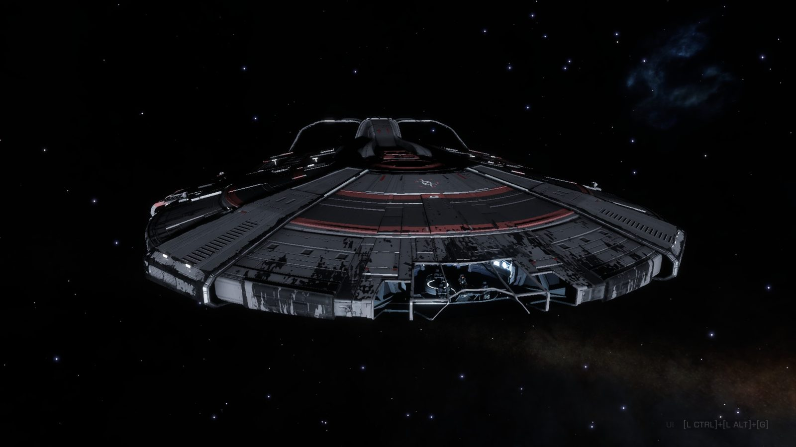

Sarah Waters
A character site for CMDR Rislyss, a pilot in the space game Elite Dangerous, set in the 34th century. The biography, chronicle and records are written in character; the flight log, hangar and engineers pages are built from the game's own journals.
"Ex-programmer of Gutamaya COVAS systems; now explorer."
Background
Sarah Waters was born in Achenar in 3274 and raised in the Imperial capital. She trained in software and spent the better part of a decade at Gutamaya on the cockpit voice team, writing the COVAS systems that guide Imperial pilots through docking, fuel state and hull integrity. She resigned in 3308. By her own account, she had spent ten years writing the voice that warns a pilot of hull failure without once being the pilot.
Her first ship was a Hauler, registered as Horizon and still in her fleet. Over the summer of 3308 she bought and sold three Asp Explorers before settling on a Diamondback Explorer, Dreaming Void, which remains her registered ship. The Pilots Federation took her from Mostly Aimless to Pioneer in under two months. She flew Federation contracts to the rank of Ensign and bought a Federal Gunship. She then drops out of the record for twenty-three months.
She returned in August 3310 aligned with the Empire and rose quickly from Outsider to Baron, then to Viscount. Her fleet grew to include the Imperial Clipper Void Runner, the Krait Phantom Invictus, the Fer-de-Lance Artemis and the Python Hephaestus. She pledged to Li Yong-Rui and logged twelve first-discovery organics. In September 3310, flying Invictus in the Pleiades, she encountered Thargoids. She later left her SRV on a Thargoid-site moon in Pleiades Sector LY-Q b5-2, and the record goes quiet for a further twenty-one months.
In October 3312 she resumed from the same Scarab, survived a systems shutdown on the surface, and flew ten jumps home to Diaguandri, where her fleet is kept at Ray Gateway. She sold two years of cartographic data and renewed her Li Yong-Rui pledge. She then refitted the Mandalay Aurora for long-range work, with two field maintenance units and grade 5 engineering from ten engineers, as far as her current access allows, and began delivering rare goods for Li Yong-Rui in Void Runner.
- 3274Born in Achenar.
- c. 3298–3308Software engineer on Gutamaya's COVAS voice team.
- Jul 3308Leaves Gutamaya at 34. Buys the Hauler Horizon.
- Aug 3308Buys the Diamondback Explorer Dreaming Void.
- Sep 3308Pioneer. Federal Navy Ensign. Buys a Federal Gunship.
- 3308–3310Twenty-three months unaccounted for.
- Aug 3310Returns aligned with the Empire. Rapid promotion to Baron. Buys Void Runner.
- Sep 3310Viscount. Pledges to Li Yong-Rui. Meets Thargoids in the Pleiades aboard Invictus.
- 3310–3312Parks the Scarab in LY-Q b5-2 and disappears again.
- Oct 3312Survives a systems shutdown in the Pleiades and returns to Diaguandri. Refit of Aurora begins.
- Oct 3312Aurora refit completed. Lifetime hyperspace distance passes 100,000 ly.
Physical record
- Height
- 162 cm · 5′4″
- Weight
- 56.6 kg · 125 lb
- Build
- Lithe, lean and toned, consistent with ration diet and extended low-g service
- Measurements
- 86-64-88 cm · 34-25-35 in · 30D
- Skin
- Pale, faint freckles across the nose, tans poorly
- Hair
- Chestnut, shoulder-length, tied back in flight
- Eyes
- Pale blue, fine crow's-feet at the corners
- Face
- Oval, high cheekbones, narrow nose
- Hands
- Slender and long-fingered; steady from a decade of keyboard work, now calloused from stick and throttle
- Posture
- Upright and composed, with the formal bearing typical of the Imperial capital
- Voice
- Low and measured; Imperial English accent, noticeably sharper when irritated
- Blood type
- O negative
Distinguishing marks and augments
Small scar through the brow, from a hard landing during her Federation contract period.
Burn scar, sustained during the Scarab systems shutdown in the Pleiades, 3312.
Small tattoo of Achenar's star. Her only recorded personal marking.
Neural interface port, installed at Gutamaya for COVAS development work.
Character
- Precise and economical in speech, with a dry sense of humour that is easy to miss.
- Self-sufficient. Tolerates isolation and long deployments well.
- Slow to trust. Warm and loyal once trust is established.
- Methodical, with a strong tendency to diagnose and repair faults herself.
- Strongly attached to her ships; protective of the people close to her.
- Redirects personal questions toward technical detail.
- Drinks tea black. Keeps irregular hours.
- Flies with COVAS volume reduced and routinely checks the installed voice build.
- Has never sold a ship she was attached to.
When thinking, she taps two fingers on the console in a steady rhythm. Changes in its speed are a reliable indicator of her state.
Rhythm quickens when a personal question comes too close.
Rhythm slows, usually followed by a single technical question to keep the conversation going.
Private life
Not for circulation
Bisexual, with a strong preference for women. She has had relationships with both men and women and treats the subject as private, including with people she trusts. Currently single. She does not name former partners unless asked.
Casual encounters are occasional rather than habitual, typically at a port of call between contracts, with terms made clear on both sides beforehand. She chooses partners who are calm, sharp and indifferent to her rank or fleet, and she leaves before the next jump window. She does not discuss these encounters afterwards. Her personal logs sometimes retain a name; there is no record of follow-up contact.
Fleet

RI-X05Explorer · active ship Hymn of the Long Night Caspian Explorer Fiden · Nomad Refrain, one SRV Scarab, one lost at Fiden In the hangar →